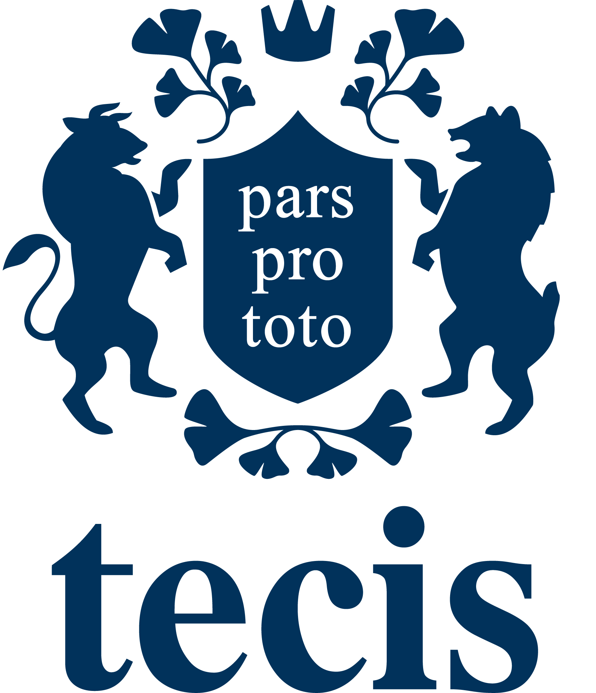

Joe Möbius
Beraterassistent
Selbstständiger Repräsentant
tecis Finanzdienstleistungen AG

Kontakt speichern
Tippen, um die Visitenkarte als Kontakt zu übernehmen
Kirchröder Str. 107
30625 Hannover
Mobil:
0173 8428216
Büro:
0511 84408488
joe.moebius@tecis.de
www.tecis.de